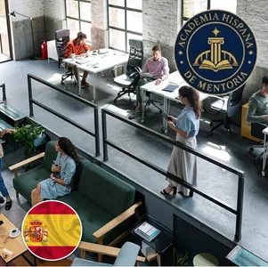
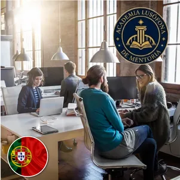
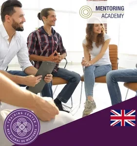
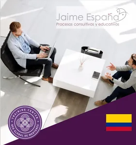
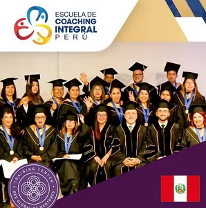
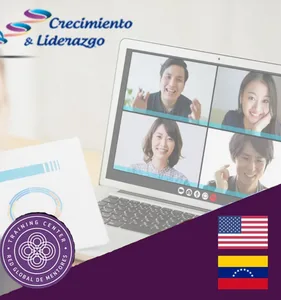

English Mentoring Academy
Londres, Reino Unido · língua inglesa
É a entidade responsável pela construção doutrinal, académica e estratégica da disciplina. Hoje existem mais de 15 Centros de Formação certificados em 13 países, em três línguas (espanhol, português e inglês).
Entidades autorizadas pela Academia Global RGM para desenvolver, representar e expandir a mentoria num determinado idioma. A sua missão é impulsionar a formação, a certificação, a investigação e a profissionalização da mentoria, adaptando os padrões internacionais à realidade cultural e educativa de cada território. Atuam como elo entre a Academia Global RGM, as universidades, os centros de formação e os mentores da sua região.
Londres, Reino Unido · língua inglesa

Madrid, Espanha · língua espanhola

Lisboa, Portugal · língua portuguesa
Instituições de ensino superior que incorporam a mentoria na sua oferta, ministrando programas oficiais desenvolvidos ou chancelados pela Academia Global RGM, através de unidades curriculares, especializações, pós-graduações, mestrados e programas de formação académica, com rigor científico, qualidade educativa e reconhecimento institucional.
Instituições de ensino que integram a mentoria nos seus próprios programas formativos, combinando-a com outras disciplinas, metodologias ou áreas de especialização. A sua função é divulgar, ensinar e aplicar a mentoria em diferentes contextos, através de programas mistos chancelados pela Academia Global RGM.





Lima, Peru




Río de Janeiro, Brasil

Os Mentores Docentes Certificados são os profissionais habilitados para exercer a mentoria de acordo com os padrões académicos, éticos e metodológicos da Academia Global RGM. Constituem a expressão prática de todo o ecossistema, pois são quem transfere experiência, critério e sabedoria aplicada a pessoas, equipas, organizações e comunidades.
Centros de Formação em formato de franquia que lhes permite lecionar formações com os programas da Academia RGM e depois conceder certificações internacionais.